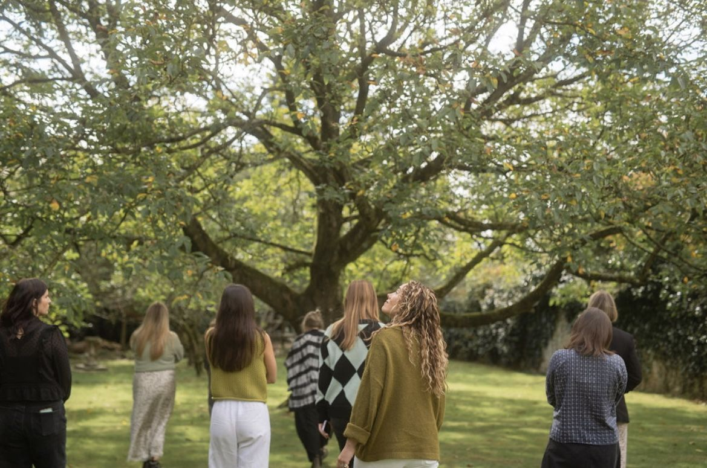
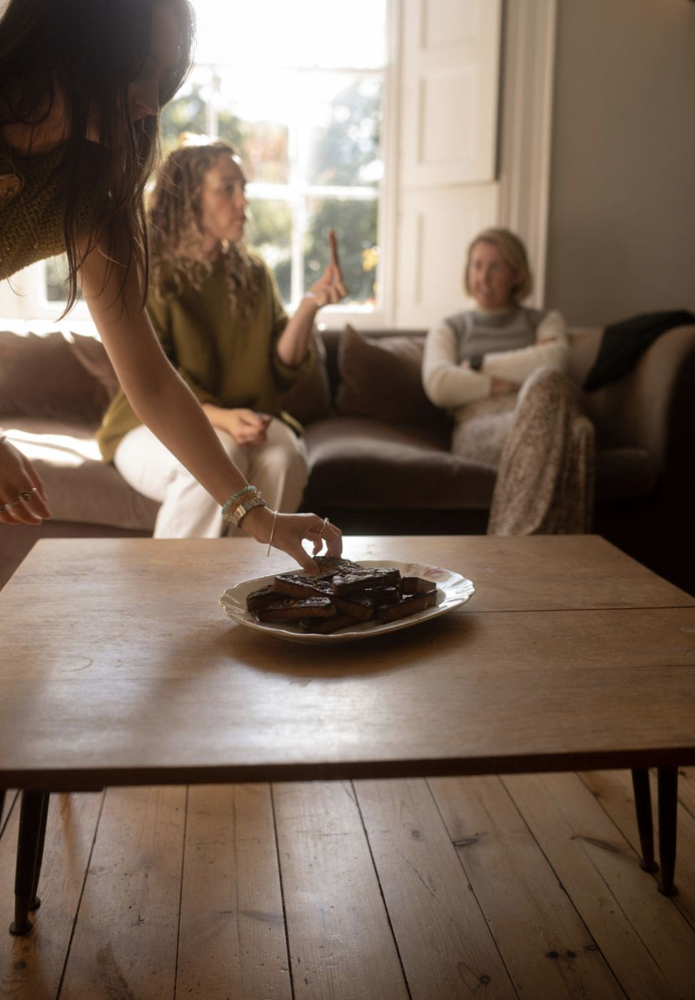

Philosophy
WOVEN exists to create the conditions where people are fully present in their own moments: held, known, and safe enough to simply be.

What I believe
Events shouldn't be about creating content or performing for an audience. They should be about bringing people together, genuinely and without distraction.
When you're worrying about timelines or logistics or whether everything is perfect, you're not actually there. You're managing. That's what I take on. I carry the weight of coordination so you can be fully present.
I get to know you deeply, your why, what matters, who you are, and build your experience from that understanding, not from templates or trends. I believe in real moments over curated ones. In people immersed in an experience rather than watching it from the sidelines. In a day that feels like you, told through the details I've learned matter to you.
Every element, from the timeline to the set-up to how I show up on the day, is held with intention. Nothing is an afterthought. I'm methodical and intimate at once: organised enough that you can trust me completely, present enough that you never feel alone.

The why
Weaving is slow, handmade and personal. Every thread matters, and none of them works alone. That's how I see a wedding: your families, your friends, your story, all brought together into something that holds.
I was painfully shy when I started out in a wedding venue kitchen. Moving front of house taught me to notice people: who's nervous, who needs a moment, what would make someone feel looked after. That quiet attention is still the heart of my work.
WOVEN is the foundation you build on. You bring the vision and the people. I make sure it's held together, so all you have to do is be there.
What guides me
Knowing you
Before anything else, I get to know you and your why. Nothing about your day is transactional, and you'll never feel like one booking among many.
Showing up
Methodical and personal at once. I'm there for every question and worry, and on the day I'm the calm you can lean on.
Keeping it real
Real moments, never performed ones. Your day should reflect your values and your story, not what's trending this season.
Bringing people together
People connecting with people is everything. I shape every celebration so your guests feel part of it, not spectators to it.
How it should feel